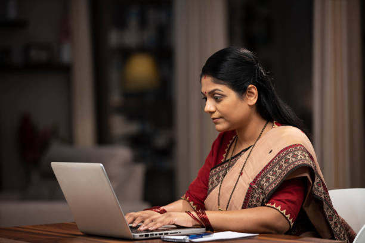
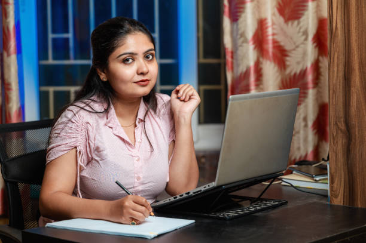
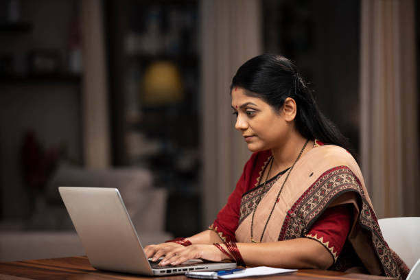
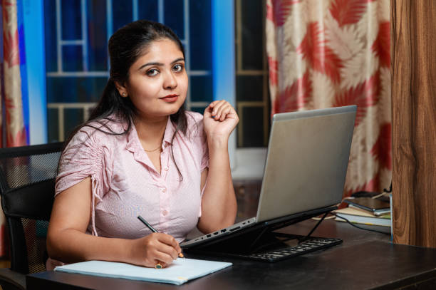

The Beauty of Life Experiences
October 17, 2025
Life is a collection of moments—some joyful, some challenging—that shape who we are. Every experience, whether big or small, teaches us something valuable. From the laughter shared with friends to the lessons learned from mistakes, these moments build our resilience and wisdom. Embracing life’s ups and downs helps us grow, appreciate the present, and find meaning in our journey. After all, it’s through experiences that we truly come alive.
Read more →
Learning from Mistakes: A Path to Growth
October 16, 2025
Mistakes are often seen as setbacks, but they are really stepping stones on the path to success. Every mistake holds a lesson if we’re willing to look closely. Instead of fearing failure, embracing it allows us to grow stronger, wiser, and more resilient. When we learn from our errors, we not only improve ourselves but also gain the courage to take on new challenges. Remember, mistakes don’t define us—how we respond to them does.
Read more →

 


